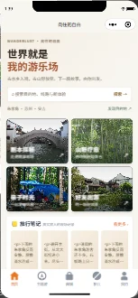

旅豆，记录参与的回响。
按活动和订单规则获取，在适用场景抵扣。符合条件的笔记可获旅豆，具体条件与上限以活动说明为准。
一座城，不止一种打开方式。
主题体验在地好物旅行创作共同成长FIND YOUR NEXT ESCAPE
不必把远方留给长假。
一条老街，一段山路，都可以是出发的理由。
目的地摄影与旅行灵感展示；具体可售线路、库存和预约安排，以小程序页面为准。
STORIES WORTH SHARING
在旅行笔记广场，发现图片里的风景，
也读到风景之外的感受。
ONE JOURNEY. THREE PERSPECTIVES.
两个小程序，一个 PC 工作台。
让内容、交易、履约与经营，连成同一段旅程。
把旅行灵感、在地体验和旅途记录，放进一个随手打开的小程序。

现场少一点来回确认，让每一次到店都有清晰的安排。

面向运营、内容、财务与城市协作角色，按职责分工，把业务办成。
工作台需授权账号；合作演示请先联系我们。
产品界面与数据为演示示意，不代表实际经营业绩。
CONNECTED BY REAL EXPERIENCES
旅行者、创作者、商户与运营者，
在真实的旅行中连接彼此。
笔记与目的地内容
线路、商品与预约
订单凭证与到店核销
创作、互动与成长
按活动和订单规则获取，在适用场景抵扣。符合条件的笔记可获旅豆，具体条件与上限以活动说明为准。
官方补贴权益，按门槛、有效期及适用范围使用。与旅豆分开使用，每单一份、不叠加。
权益规则与适用资格以小程序实时展示为准。旅豆与自由豆不可充值、转让或提现。
BUILD SOMETHING LOCAL, TOGETHER
从一个真实场景开始，
把内容、供给和服务，一步步连接起来。
梳理可体验的场景与产品，让目的地内容和预约、履约有连接。
聊聊目的地合作带来好物、餐饮、民宿或到店体验，用清晰的库存、核销和对账服务来客。
咨询门店接入用作品介绍一座城，参与约稿、内容共创与本地协作，让贡献有记录。
一起参与共创当前产品通过邀请方式演示。请通过下方电话或邮件联系我们，确认体验身份后获取当期有效入口与体验资格；商户端需配置对应的门店权限。
还支持视频、实况素材与攻略图创作，并提供话题、景区关联、评论与回复。公开与私密笔记分别按可见范围访问，发布内容需遵守社区与审核规则。
普通商品有库存即可直接购买，不选团期、不参与成团；到店体验按可预约时段安排。主题游的出行日期与成团规则则以对应线路说明为准。
旅豆属于参与及消费权益，按规则积累和使用；自由豆是独立的官方满减补贴权益。两者的门槛、范围、期限分别展示，不叠加使用，不可充值、转让或提现。
官网用于产品介绍与合作咨询。具体价格、库存、预约、退改与支付请在小程序中确认。当前演示环境中的交易数据用于功能演示，不作为实际经营业绩。
LET’S MAKE THE NEXT JOURNEY HAPPEN
想体验产品，或把你的目的地带给更多人？
欢迎聊聊你的想法。